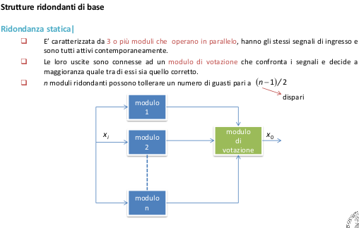

Aumento affidabilità => aumento perfezionamento o tolleranza
perfezionamento| si riferisce all’idea di evitare i guasti mediante il miglioramento della progettazione:
- utilizzo di componenti tecnicamente all’avanguardia;
- manutenzione regolare;
- diagnosi precoce dei guasti mirata alla manutenzione pro-attiva.
Tolleranza| si riferisce all’idea di contenere le conseguenze dei guasti in modo tale da mantenere il sistema funzionante:
- evitando che un fault possa quindi degenerare in failure;
- facendo affidamento sulla ridondanza;
- ammettendo una degradazione nelle specifiche di funzionamento.
per aumentare l’affidabilità è sempre necessario incrementare il costo finale del sistema, sia che si tratti di perfezionamento sia di tolleranza.
